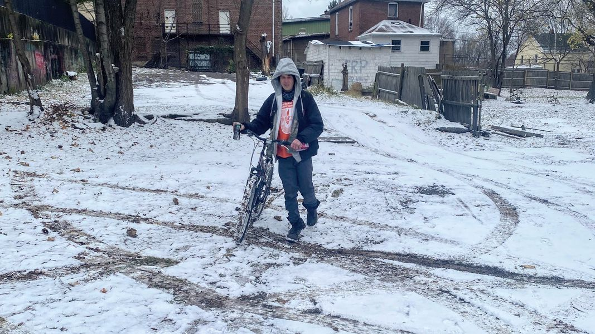

Timeline photos
WHAT THE ACTUAL FUCK, @[100064805494040:2048:City of Akron, Ohio - Mayor's Office]?
Did you not get the memo? Did you miss a voicemail? Because I can't imagine why else you would not be participating in the "No One Should Sleep Out in the Cold" initiative 4 SUMMIT COUNTY CITIES ARE PARTICIPATING IN BUT YOU ARE NOT!!!
This year I am standing with Stow, Silver Lake, Monroe Falls and Cuyahoga Falls to help support their "No One Should Sleep Out in the Cold" initiative.
The only thing Akron does for homeless people is destroy their lives.
The picture here is of my friend Kenny. 3 mornings ago he left his camp on his bicycle in the morning. When he came back in the evening, EVERYTHING was taken. The city of Akron took EVERYTHING. All he has is to his name is what you see in this picture. (It is currently 24 degrees in Akron Ohio, as I write this.)
The city of Akron systematically swept every single known homeless camp this past week. (They like to do this right before Thanksgiving and then again at Christmas.)
Meanwhile, Stow, Silver Lake, Monroe Falls and Cuyahoga Falls have banded together to create the "No One Should Sleep Out in the Cold" initiative will be collecting warming items through Dec. 16.
I can't say it enough, Akron is run by truly bad people. They desperately tried to undermine the Issue 10 ballot initiative created by the people of Akron for a citizen oversight board for our police. They have now set up no trespassing signs at the White Pond Development so people can no longer walk down the SIDEWALK to participate in the nature of that public land. And they REPEATEDLY do nothing for homeless people other than sweep their tents. They are bad, bad people.
We must fight their evil with good.
PLEASE SUPPORT The "No One Should Sleep Out in the Cold" initiative run by Stow, Silver Lake, Monroe Falls and Cuyahoga Falls.
Donors can drop off warming items at Stow city hall and Silver Lake village hall on Saturday, December 3, from 10 a.m to 2 p.m. and at Cuyahoga Falls and Monroe Falls city hall on Saturday, December 10, from 10 a.m to 2 p.m.
If you want to bring them to me you can drop them off at my house on the West side of Akron. (message me for the address.)
These are items they need:
Boots - waterproof, men's (10-12), women's (all sizes)
Hoodies - men's w/zipper, L, XL (Fruit of the Loom - cotton)
Flashlight and Batteries - any
Backpacks - daypack adult type - sizes: 20L or 40L
Hand Warmers - many needed
Socks - large athletic or wool - many needed
Gloves – brown jersey or thermal
Boxer Briefs - men, all sizes, Gildan covered waistband multipack
Underwear - women, all sizes, cotton briefs
Meal Cards - McDonalds, Burger King, Subway, etc.
One Day Akron Metro Bus Passes
My personal focus is Zero Degree sleeping bags, camping mats and tarps.
I'm going to be talking more about this particularly during this Thanksgiving week.
KNOW THIS: There is clearly evil in the world. And it runs Akron. BUT!!! Goodness reigns supreme. And that goodness is YOU. The only reason I have the energy to keep fighting this battle is BECAUSE OF YOU.
You are SO good and SO kind. Sometimes I have to lower my eyes in your presence because your light is so bright. YOU are the manifestation of God's light and love and life. BELIEVE THIS! There is much more goodness in the world than bad. Bad simply has an insatiable desire for power. The Lamb of God (you) just wants to love.
If you have the space in your life this week to give a little something, anything, please consider doing it. Giving is the manifestation of God's Love.
I love you so much. Never give up hope.
Sage